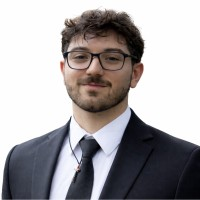
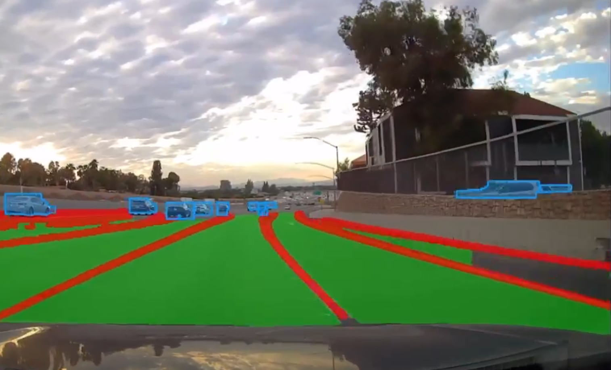

B.S. Computer Engineering, California State Polytechnic University, Pomona
Research Assistant, Autonomous Vehicle Laboratory
I am a Computer Engineering student at Cal Poly Pomona (expected Spring 2027) and a Research Assistant at the Autonomous Vehicle Laboratory. My work focuses on real-time computer vision and deep learning for autonomous vehicle perception systems, including road segmentation, lane detection, object recognition, and traffic infrastructure identification.
I develop multi-model inference pipelines using state-of-the-art architectures such as YOLOPv2 and YOLOv8, with applications in drivable area segmentation, dynamic object detection, and safety-critical perception for self-driving vehicles.

A real-time panoptic perception system that simultaneously detects drivable road areas, lane lines, vehicles, pedestrians, bicycles, traffic lights, and traffic cones. Integrates YOLOPv2 and YOLOv8m-seg into a unified pipeline achieving 20–30 FPS on GPU. Includes a desktop GUI, web interface, and batch-processing editor.
Python, PyTorch, OpenCV, CUDA, YOLOPv2, YOLOv8, Tkinter, Flask
Key results: 93.2% mIoU drivable area detection, 83.4% mAP vehicle detection, 87.3% lane accuracy
California State Polytechnic University, Pomona
B.S. Computer Engineering | Expected Spring 2027 | GPA: 3.43
Languages: C, C++, Python, Java, JavaScript, HTML/CSS
Frameworks: PyTorch, TensorFlow, OpenCV, ROS/ROS2, Flask, Ultralytics (YOLOv8)
Tools: MATLAB, Git/GitHub, Linux/Unix, Microsoft Office, Microsoft Excel